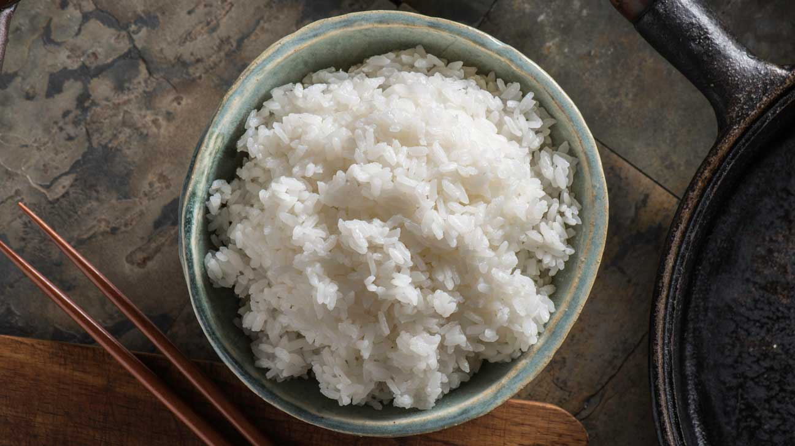

White rice

Plain white rice is an excellent inexpensive side dish for nearly any meal—it's hard to find a dish that rice doesn't complement. It's also a blank canvas to which you can add countless ingredients for extra flavor, and it does a good job of soaking up the sauces of whatever you pair it with, too.
Ingredients
- 1 cup long-grain white rice
- 2 cups water
- 1/2 teaspoon salt
- 1 tablespoon unsalted butter, optional
- 1 tablespoon finely chopped parsley, optional
Instrunctions
- Gather the ingredients.
- Rinse the rice under cold water until the water runs clear. Drain in a colander and set aside.
- In a medium saucepan, bring the water to a boil. Add the salt, stir, and then add the rinsed and drained rice. Stir with a fork.
- Reduce the heat to low, cover, and let simmer for 20 minutes. Check it after 15 minutes to see if all the water has evaporated. If it has, the rice is ready. If not, replace the lid and let the rice simmer an additional 5 minutes.
- Remove from the heat and fluff with a fork. Transfer to a plate and serve garnished with butter and parsley, if desired.
Additional tips
- The exact time required to cook rice depends on your stove and the kind of pot you use. When you find the ideal time, the stove setting, and the pot that works in your kitchen, write it down. Follow that formula exactly every time you cook rice.
- Taking the rice off the heat and letting it steam with the lid on for 5 to 10 minutes makes for fluffy rice
- This cooking method can be adapted to different types of white rice, such as basmati, jasmine, etc. You may have to adjust the amount of water and cooking time.
Return to top